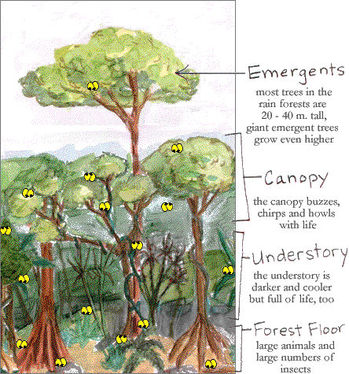

There is a wide variety of life in the
strata (different layers) of a rain forest.
The living conditions are different in each layer.
What can you find in each layer?

For more tropical rainforest resources, see the
Science Museum of Minnesota's
IMAX®/OMNIMAX® film - see the
Tropical Rainforest
card cluster.

 What can you find in each layer?
What can you find in each layer?